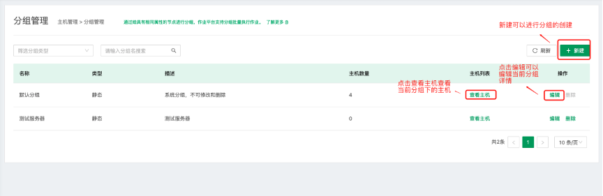
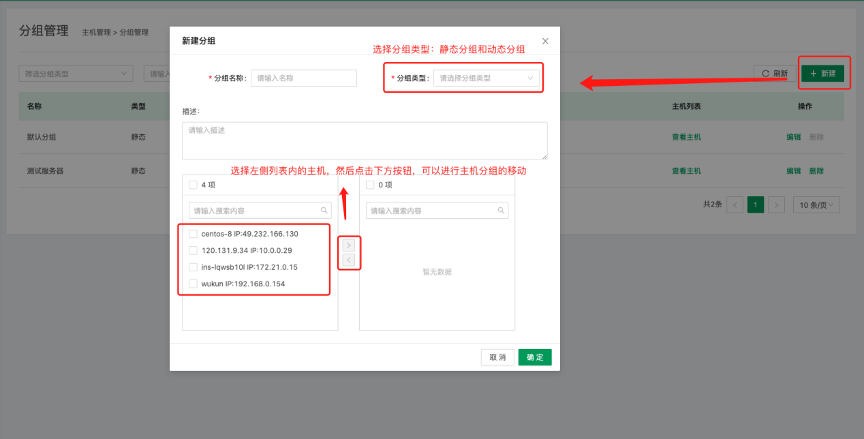
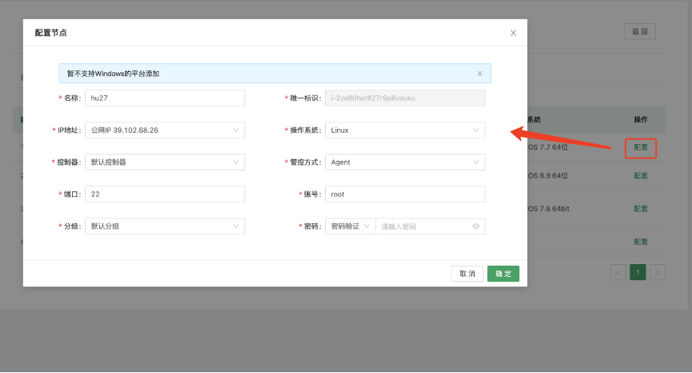
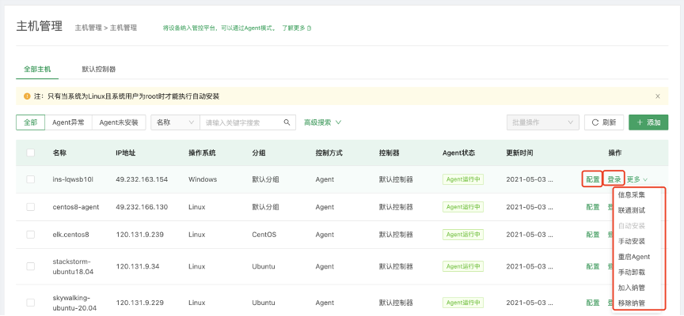
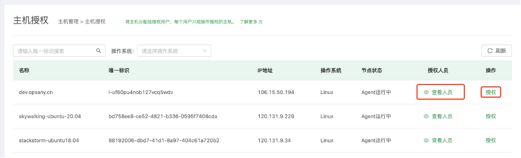
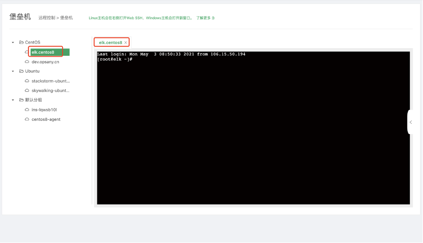
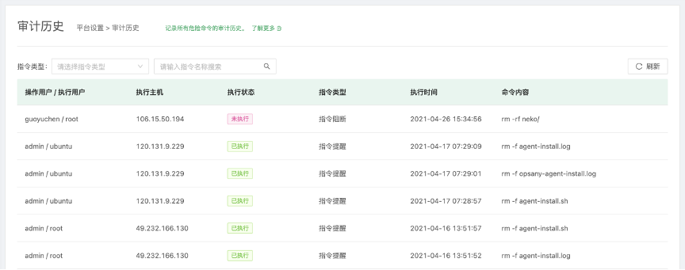

管控平台¶
管控平台是OpsAny的底层管控系统，同时也是其他服务的基础，是OpsAny体系与用户机器的连接器。管控平台支持Agent和SSH两种连接方式，支持常见的基于Linux、Windows操作系统，能够为上层平台或者SaaS 实现场景赋能，帮助企业轻松应对多云区域的IaaS设备管控。

主机管理¶
主机管理主要帮助用户在管控平台中保存和同步主机数据，通过分组的形式对主机进行管理，同时用户可以安装Agent和管理Agent的状态。用户也可以基于SSH通信链路或者Windows的3389远程端口，以客户端的形式登录目标主机，并进行操作。
主机分组¶
主机分组主要帮助企业通过分组的形式管理主机，便于使用者能够快速的搜索和管理。

管控平台会初始化一个分组，名字叫默认分组，便于用户管理临时使用的主机。
点击新建分组

分组类型：主要分为两种，静态分组和动态分组。
静态分组：用户自定义分组名称，用来自定义管理主机的分组。
动态分组：会根据用户主机的属性或者常用的参数，实现系统自动分组，用来方便用户可以找到同类型的主机。
选择主机：用户可以选择左边方框的主机移动至右侧，右侧则是当前分组下的所有主机。
当需要移除当前分组下的主机时，可以从右侧方框把主机移动至左侧方框，主机会自动进入默认分组下。
查看当前分组下的主机

点击分组列表处的查看主机，可以查看当前分组下的主机。
主机管理¶
主机管理主要用于用户对所要管理的主机安装Agent，查看当前主机的Agent是否正常，可以登录主机进行管理和操作。

点击添加按钮，可以进行主机的添加。添加主机主要分为三种类别。

- 自动添加 用户可以自定义输入主机相关的字段信息。

- 从资源平台添加 用户可以从CMDB的主机中选择需要管理的主机。列表中的主机均未在管控平台进行管理。

点击配置按钮，进行相关字段的填写，然后保存到主机管理列表中。

- 手动添加主机 手动添加主要用于用户自己到目标机器上进行Agent的安装，然后管控平台可以自动发现已经安装Agent的主机，展示在主机管理的列表中。

主机管理列表中，包含配置、登录、信息采集、联通测试、自动安装、手动安装、重启Agent、卸载Agent、加入纳管、移除纳管。

- 配置：用户可以自定义编辑目标主机的信息。
- 登录：用户可以通过客户端的形式访问目标主机，然后进行操作。
- 信息采集：主要用于同步目标主机的静态资源信息。
- 联通测试：用于测试Agent是否可用。
- 自动安装：用于安装目标主机的Agent。
- 手动安装：用于用户手动到目标主机上安装Agent。
- 重启Agent：用户可以远程重启Agent。
- 卸载Agent：用户可以远程卸载Agent。
- 加入纳管：对于自动发现的主机，用户可以直接进行纳管，纳管过程包括信息采集的过程。
- 移除纳管：从主机管理列表中移除该目标主机。
主机授权¶
主机授权主要用于企业管理人员管理主机的权限，平台管理人员可以查看所有的主机。

点击查看人员，可以查看当前目标主机有权限的人员列表。

点击授权，管理员可以对相关人员进行主机的授权。

堡垒机¶
堡垒机主要包含客户端登录，审计查看，指令审计，查看操作历史，支持权限控制。
主机列表¶
堡垒机主要用于用户快速登录目标主机，主要以客户端的形式进行操作。

从左侧目录中选择目标主机，点击选择打开会话。目标中的主机主要来自于主机管理列表中的主机。
会话管理¶
会话管理主要用于查看所有使用堡垒机客户端中会话，包括从CMDB中登录的客户端，和云管平台登录的客户端，和管控平台登录的客户端。

- 查看在线会话 主要用于管理人员管理当前登录目标主机的会话，可以对目标主机的登录者进行强制下线。

点击强制下线，可以使正在使用客户端的人员停止使用。
-- 查看会话历史 查看之前所有的会话历史，点击审计查看。

- 审计查看 平台以录像的形式展示历史会话的内容。

平台设置¶
指令审计¶
指令审计主要用于限制使用堡垒机的用户执行指定命令，帮助管理员管理运维人员的操作。

点击新增按钮

- 指令名称：填写具体指令，例如 rm -f *。
- 指令类型：分为指令提醒和指令阻断。指令提醒主要用于提示使用者是否确认使用当前指令。
- 指令阻断主要用于拒绝使用者使用该指令。
- 提示内容：当使用者使用该指令时，提示用户显示的内容。
审计历史¶
审计历史主要用于查看指令审计中历史生效的指令，便于查看使用指令时做出的哪些操作，使管理人员更方便的管理，也可查看当前使用指令的用户。

采控管理¶
采控管理是管控平台的核心组件，分为管理Agent的控制器和采集每台主机监控信息的采集器，支持使用多个控制器。

新建控制器

- 名称：用户可以自定义控制器的名称。
- 类型：支持本地和远程两种类型。
- 控制器可以分别填写内网和外网地址，便于用户根据不同的网络环境使用。
- 点击刷新按钮，可以重新获取当前控制器的状态。